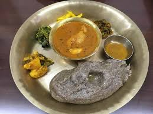

Dhido

Description
Dhido is a traditional staple food of rural Nepal, made from buckwheat or millet flour. It is dense, hearty, and nutritious, often served as a healthier alternative to rice. Dhido is typically eaten hot, accompanied by vegetable curry, meat curry, or gundruk soup, and is eaten with the hands for an authentic experience.
Ingredients
- 2 cups buckwheat flour (or millet flour)
- 4 cups water
- Salt to taste
Steps
- Boil water in a large pot and add salt.
- Gradually add flour while stirring continuously to avoid lumps.
- Keep stirring until the mixture thickens and becomes dough-like.
- Lower the heat and cook for 5–7 minutes, stiOdin Recipesrring occasionally.
- Shape the dhido with a spatula or wooden stick and serve hot with curry or gundruk soup.
Back to Home